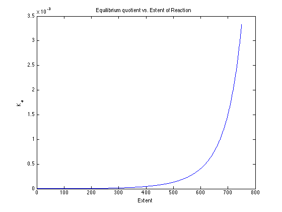
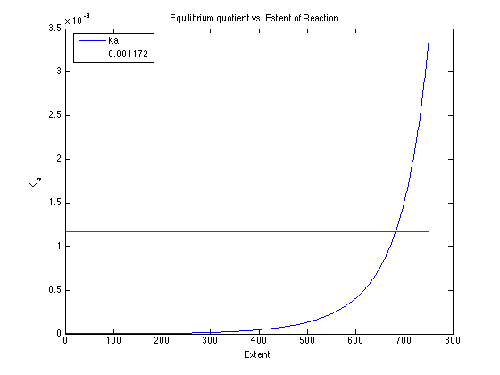
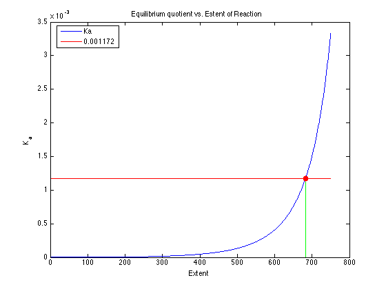
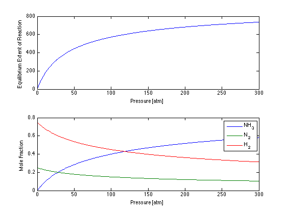

Equilibrium Extent of Reaction
Contents
Version One. Plot and estimate a solution.
Teaching points of this demonstration:
- Use of an anonymous function.
- Use of arrayfun to evaluate a function over a range of values.
- Use of fzero
Create an anonymous function for the equilibrium quotient
P = 200; Ka = @(x) ((2*x)^2 * (4000-2*x)^2) / ((1000 - x)*(3000-3*x)^3*P^2);
Create a plot using arrayfun
figure(1); x = 0:750; plot(x,arrayfun(Ka,x)); title('Equilibrium quotient vs. Estent of Reaction'); xlabel('Extent'); ylabel('K_a');
Estimate a solution from the plot
Plot the value 0.001172
hold on; plot(x,0.001172,'r'); hold off; legend('Ka','0.001172','location','best');
Find a solution using fzero
f = @(x) Ka(x) - 0.001172; xsoln = fzero(f,[0, 999]); hold on; plot([xsoln,xsoln],[0 0.001172],'g'); plot(xsoln,0.001172,'r.','Markersize',25); hold off; disp(['Equilibrium Extent of Reaction = ',num2str(xsoln),' kgmol/hr']);
Equilibrium Extent of Reaction = 682.0889 kgmol/hr
A more elaborate model.
% Molar flowrates nN = @(x) 1000 - x; nH = @(x) 3000 - 3*x; nA = @(x) 2*x; nT = @(x) nN(x) + nH(x) + nA(x); % Mole fractions yN = @(x) nN(x)/nT(x); yH = @(x) nH(x)/nT(x); yA = @(x) nA(x)/nT(x); % Equlibrium Extent of Reaction Ka = @(P,x) (yA(x)^2)/(yN(x)*yH(x)^3*P^2); x = @(P) fzero(@(x) Ka(P,x) - 0.001172 ,[0,999]); figure(2); p = 1:300; xsoln = arrayfun(x,p); subplot(2,1,1); plot(p,xsoln); xlabel('Pressure [atm]'); ylabel('Equilibrium Extent of Reaction'); subplot(2,1,2); plot(p,arrayfun(yA,xsoln),p,arrayfun(yN,xsoln),p,arrayfun(yH,xsoln)); legend('NH_3','N_2','H_2'); xlabel('Pressure [atm]'); ylabel('Mole Fraction');